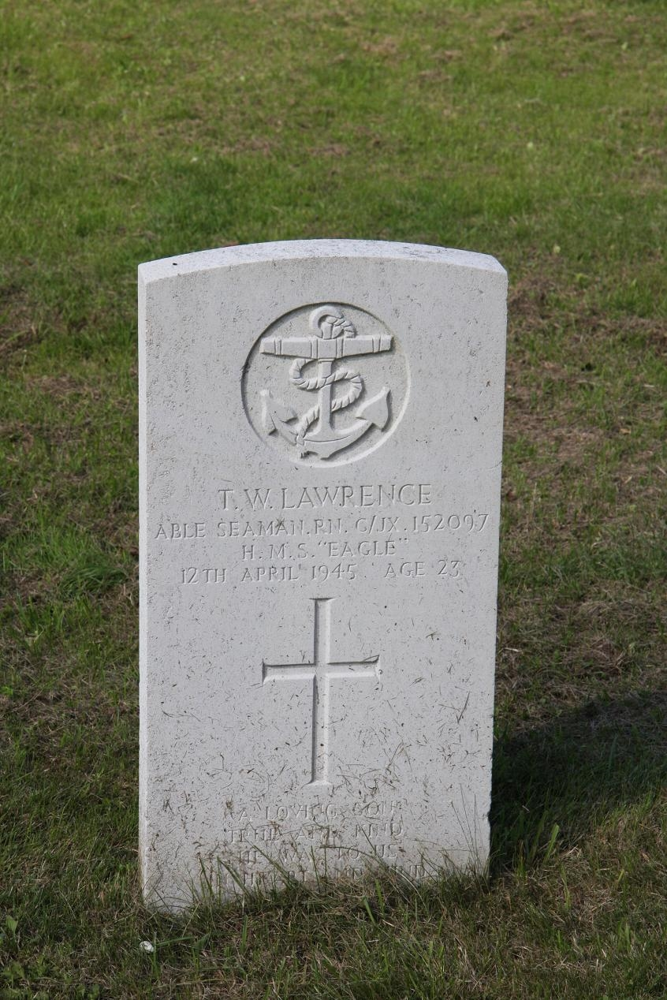
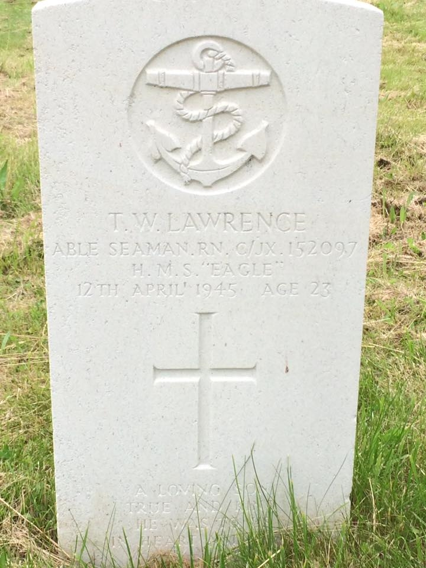
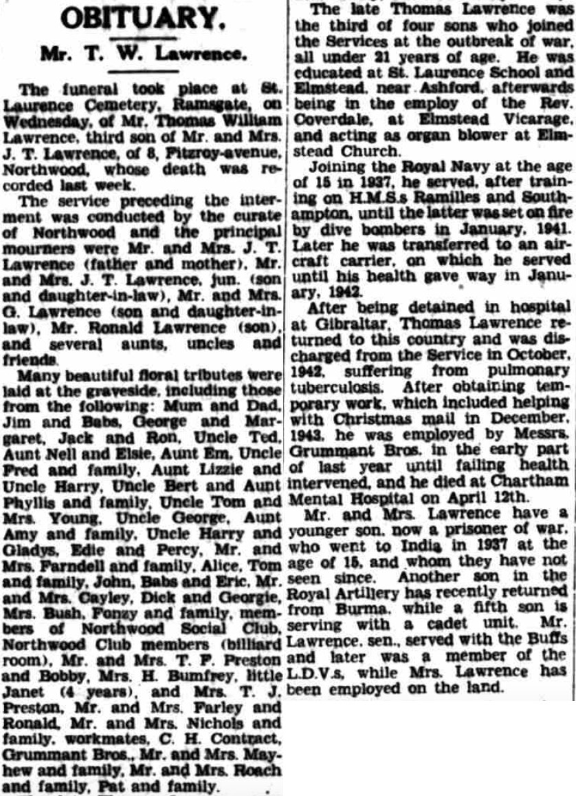
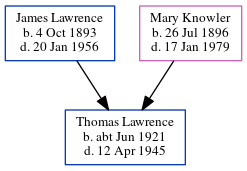

Thomas William Lawrence cJun 1921 - 1945
[ Home ] | [ Calendar ] | [ Surnames Index ] | [ Errors ] | [ Family History ]The child of James Lawrence (a general farm worker) and Mary Knowler, Thomas Lawrence, the first cousin once-removed on the mother's side of Nigel Horne, was born in Marshside, Kent, England c. Jun 19211,2,3,4.
During his life, he was living at Meadow Cottages in Marshside on 19 Jun 19211; and at 8 Fitzroy Avenue, Ramsgate, Kent, England in 1945. He served in the navy from 1937 to 1942 (regiment: Royal Navy; Rank: Able Seaman; Service number: C/JX 152097 HMS Eagle).
He died on 12 Apr 1945 at St Augustine's Hospital, Chartham, Kent4,5,6,7,8 (he died unmarried, leaving his estate to his mother) and was buried at Ramsgate Cemetery in Ramsgate on 18 Apr 1945 (an overcast day) following his funeral at St Lawrence Cemetery, Ramsgate, Kent, England7.
Parents
- James Thomas was born on 4 Oct 1893
- Mary Elizabeth was born on 26 Jul 1896
Citations
- 1921 Census Of England & Wales - Findmypast (was age - and the son of the head of the household)
- England & Wales births 1837-2006 - Findmypast
- England & Wales, Birth Index: 1916-2005 Online publication - Provo, UT, USA: The Generations Network, Inc., 2008.Original data - General Register Office. England and Wales Civil Registration Indexes. London, England: General Register Office. © Crown copyright. Published by permission of the Cont
- England & Wales, Death Index: 1984-2005 Online publication - Provo, UT, USA: The Generations Network, Inc., 2007.Original data - General Register Office. England and Wales Civil Registration Indexes. London, England: General Register Office. © Crown copyright. Published by permission of the Cont
- England & Wales Government Probate Death Index 1858-2019 - Findmypast
- England & Wales, National Probate Calendar (Index of Wills and Administrations),1861-1941 Online publication - Provo, UT, USA: Ancestry.com Operations Inc, 2010.Original data - Principal Probate Registry. Calendar of the Grants of Probate and Letters of Administration made in the Probate Registries of the High Court of Justice in England. Londo
- UK and Ireland, Find A Grave Index, 1300s-Current Ancestry.com Operations, Inc.
- World War 2 Allies Collection - Findmypast
Media
Thomas William Lawrence - headstone

Thomas William Lawrence - probate

Thomas William Lawrence - gravestone

East Kent Times and Mail - 21 Apr 1945

England & Wales deaths 1837-2007 Transcription - BMD-D-1945-2-AZ-000533-112
England & Wales births 1837-2006 - BMD/B/1921/3/AZ/000905/024
Commonwealth War Graves Commission Debt Of Honour - GBM/CWGC/ROLLOFHONOUR/001413593
England & Wales Government Probate Death Index 1858-2019 - GBOR/GOVPROBATE/C/1945-1945/00100341
World War 2 Allies Collection - WW2/06938636
Family Tree
Map
Generated by ged2site. Last updated on Jul 3, 2024
Known Issues
Residence record for 1945 contains no citation
1939 UK register information missing
Location for the event between 1937 and 1942 is empty